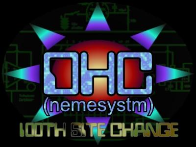
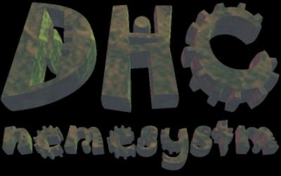

|
 Yes siree, this is the 100th site change for me, nemesystm. It's too bad Attrition and the other people who mirror sites didn't get the chance to grab the others before they were changed, and I didn't send like 60 to them, but for the ones they did grab: thank you very much. All of the sites can be seen at dhc2.cjb.net or dhc1.da.ru. The pages showed there had a least one other witness to see if I didn't make a mistake or something. The site also has some self written texts and programs. Don't expect any l33+0 stuff though. And even though there are many people out there who changed MANY more sites, I'm still celebrating. :) Until now most site changes had a lot of greets, and we'll have that too today, but we besides that we normally just had a poem. So now we will dedicate this to charity.
|
|
| With all the wars and chaos in the world we seem to forget
all the homeless around the corner of the streets, we seem to have
forgotten the people who made this country great. It seems on purpose:
putting them away in a elderly home, never visiting, like a mistake best
to be forgotten. We don't seem to notice the problems the poor have in the
city, and in the countryside, we just drive by in our nice little cars, we
just don't care.
I guess it's too much to ask. We have become greedy right? I guess it's too much to ask. We have become better then them right? I guess it's too much to ask. We will never be as poor as that, right? |
|
| I guess it's too much to ask. I mean, we will
never be in their position, right? Guess again! With people cutting back
on social funding that is already meager and poor, with people cutting
funds for education, which gives the fruit of all the things society has
done, we will be in that position one time or a other. Maybe not now,
maybe later, maybe never, but some will, and wouldn't it be nice to have
some food to eat? I'd think so. Oh well, I guess it's too much to ask to
go to a homeless shelter and help out. I guess it's too much to ask to
volunteer at schools and prevent "accidents" like me. I
guess...I'm right.
You can be proud of yourselves. Little side note: why would there be a Trenchcoat Mafia if all was fine? And no TV is going to substitute some decent parenting, that's why parents are against violence on TV: they're to lazy to raise their child. So go down to the elderly homes, the nature reserves, the schools and the homeless shelters and help out. If you can't come because you can't pry yourself away from the computer screen, send some money. After all, why drink beer if you can use that money to give some poor person in Africa food? :) Ok, maybe not your beer money, but do you really need that new jacket? Greetz: Jay 4 skipping school, Huisman you tha gabber man.:), To everyone of the DHC: Nemesystm, (leader of the DHC, this site's changer), Trinity, ©Æ$4R, Dark Plague, §lash ¥, Aero, Zanith, Spiderfire, H@vock, Firefly. everyone in the Underground Havock: Zero, Ashes, Buntee, Hakz, Innrwrld, Kr0me Warri0r, Nando, Phewl, Prox, Razor Burn, Regal, Ghetto Pirate, etc. you know who you are. Nym, Herrinys Armata, rfp, LDH, PH'z, the Burning Tampon Temple People (BTTP), the Horny Story people. HackCanada, ph3wl, r3p3nt, Virulent, Terrorbyte, Huey P. Newton, L0pht, Progenic, Black Panthers, Limp Bizkit, Korn, Marilyn Manson, the Ministry, magik, C.M, Megan, Krissieboo :), all the other girlies in Canada, all the ppl's at #progenic. Guano Apes, Attrition (for putting up with me), Dutchthreat, Hackernews, Packetstorm, etc. And all the ex members of the WHA. And as said before: admin I'll tell you how I did it if you mail me at dhcorp1@hotmail.com also if you know where to find Chronoss a.k.a Prometheus, or if you just want to yell at me claiming I think I'm elite. (something I don't think, so everyone who mailed me that, and didn't mail back a reply: here you have it in case you didn't get my E-mail) Or if you just feel like writing something, that's ok too. :)  Family Values in dedication to M. too bad you're not here to read this... |
|